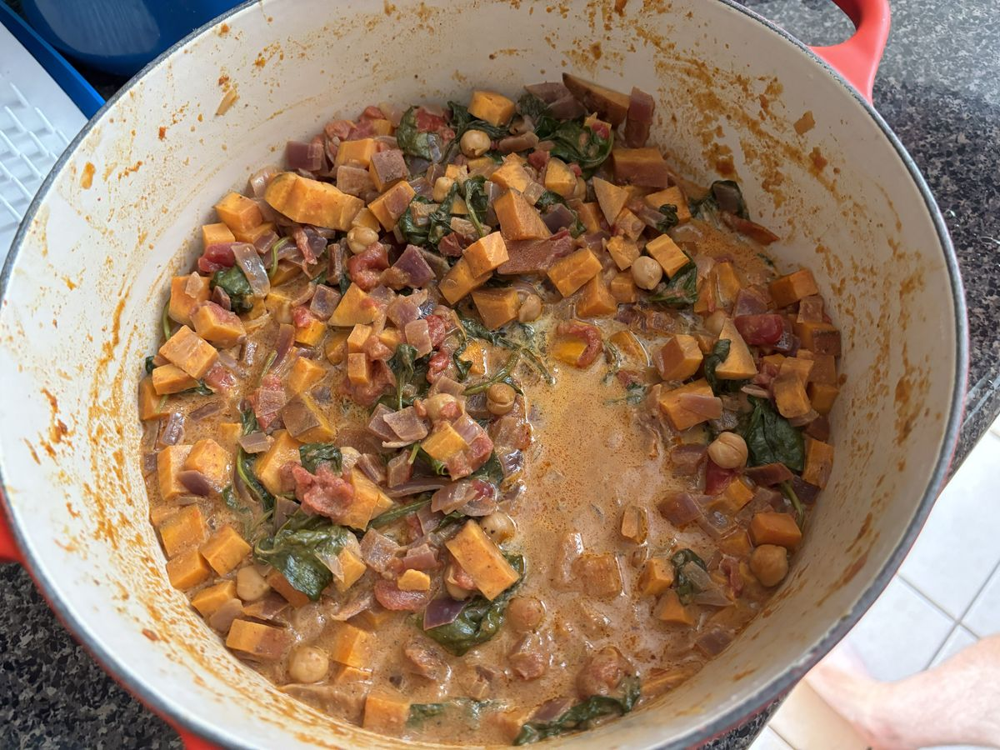

Based on https://www.jamieoliver.com/recipes/vegetables/sweet-potato-chickpea-amp-spinach-curry
Personal rating: 4 / 5

2 red onions, finely diced
3 Tbsp Patak Rogan Josh Curry Paste (or comparable Curry Paste)
1 tsp ground ginger (3cm grated if fresh) (maybe down to 1/4 or 1/2 tsp?)
1 tsp of ground coriander (maybe up to 1 Tbsp?)
2 sweet potatoes, 2cm cubes
400ml can of chickpeas, drained
400ml can of chopped tomatoes
400ml can of light coconut milk
Bag of spinach
2 cups uncooked rice, Naan, or other base
Prep the onions and sweet potatoes. Start the rice
Heat 2 Tbsps of oil in a large pot over medium heat
Saute the onions with the curry paste. Cook for 10m until soft and golden
Add the ginger, coriander, sweet potato, chickpeas, tomatoes, and 200 ml water to the pan. Bring to a boil
Remove the lid, then cook for a further 15-20 min, stirring occasionally, or until the sweet potato is cooked through and the sauce thickened
Stir in the coconut milk and cook for a couple of minutes, then stir in the spinach and cook until wilted